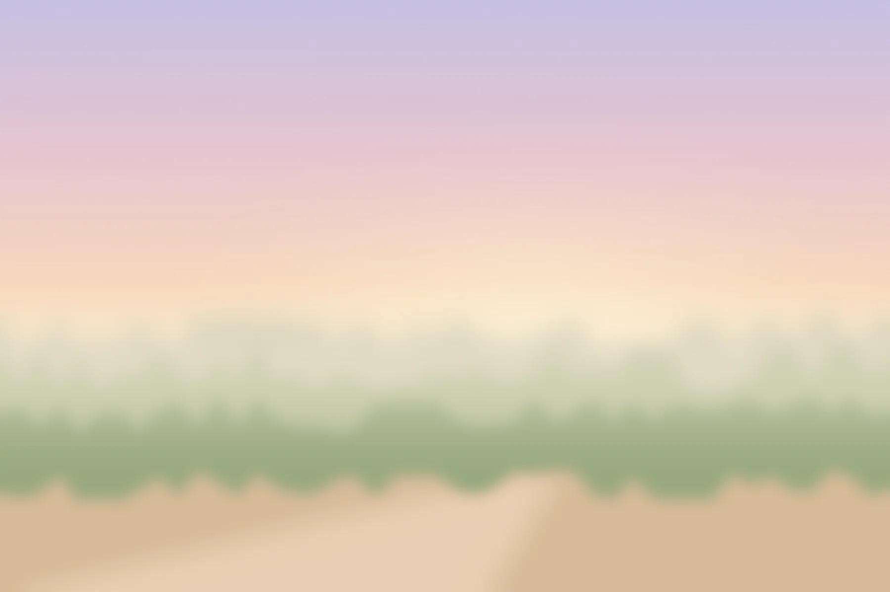
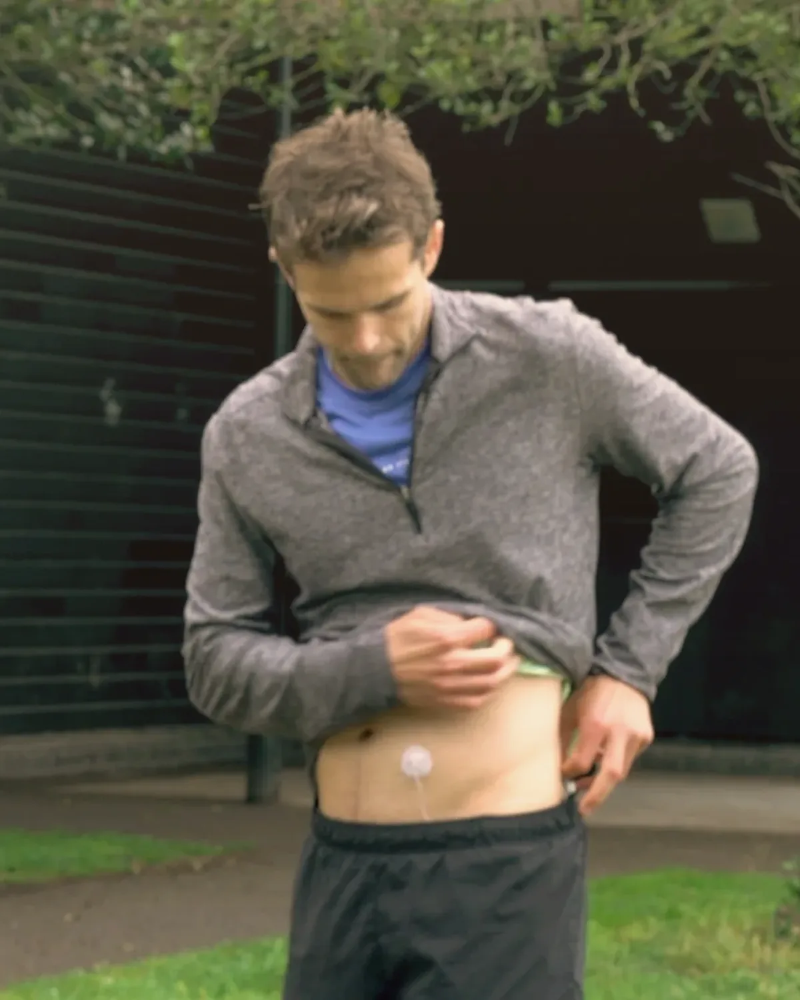
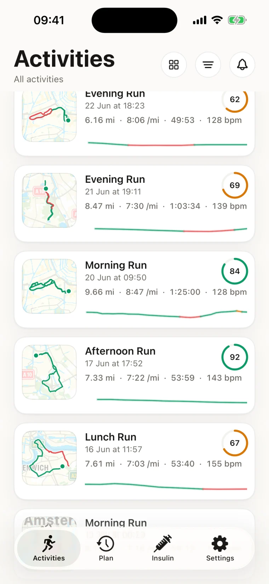
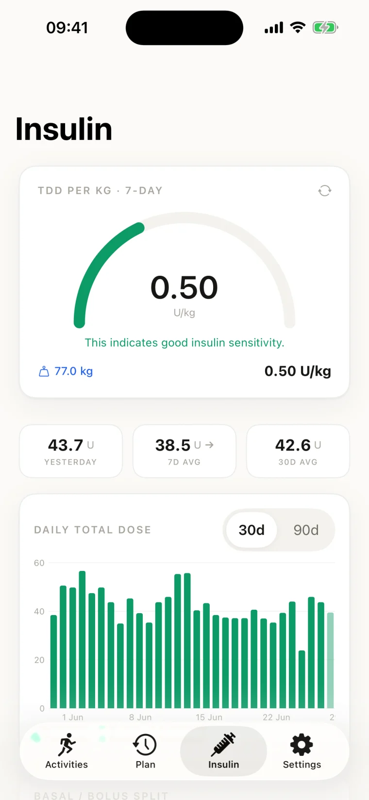
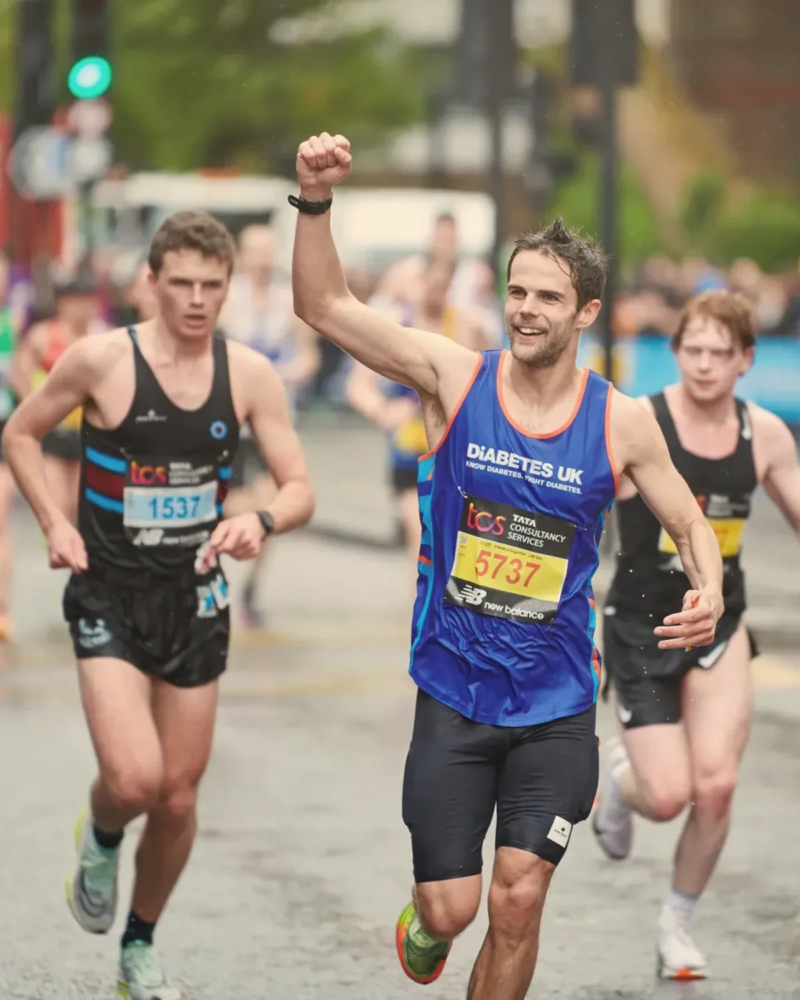

 Dexcom
Dexcom Strava
Strava Apple Health
Apple Health Nightscout
Nightscout01 · Connect
Link your sources
Strava, Apple Health, Dexcom or Nightscout. Activity and glucose sync automatically.
For Type 1 athletes
Your CGM, lined up against every workout. Before, during and after, so you learn from your own body instead of guessing.
Download freeFree · iOS and Android · Syncs on its own
Málaga Marathon 2025 · Peter's own race · 94% in range
Syncs from
Before the gun
Thirty years in, it is still trial and error. The trials are the only data you have. Keep them, and read them.
How it works
The app captures glucose alongside every session in the background. Nothing to log, nothing to remember.

01 · Connect
Strava, Apple Health, Dexcom or Nightscout. Activity and glucose sync automatically.

02 · Train
No extra steps, no extra devices. The sensor you already wear does the work.
03 · Discover
Overlay glucose on any activity, compare repeated efforts, learn what works for your body.
See it work · Málaga Marathon, 14 December 2025
The app
No more app-switching. Every session arrives with the glucose that went with it, and the app reads it for you.



Free, on iPhone and Android.
Download freeWho built it

I have lived with Type 1 for over thirty years. We are told exercise is critical for managing it, and there is no instruction manual. For most of us it is trial and error, and because the condition is so personal, you cannot learn much from anyone but yourself.
Over time, patterns emerge. Seeing your own data lets you find them faster, iterate quicker and stop guessing. That is why I built Glucose Insights. Whether you are lacing up for a first 5K or a tenth ultra, it can help you get there.
Peter, founder
“It's a game-changer for my learning and improvement. The app offers a personal, at-a-glance overview of all the important metrics.”
Used by 100+ Type 1 athletes.
Download free →Next run
Free to download · Patterns from your first synced workout